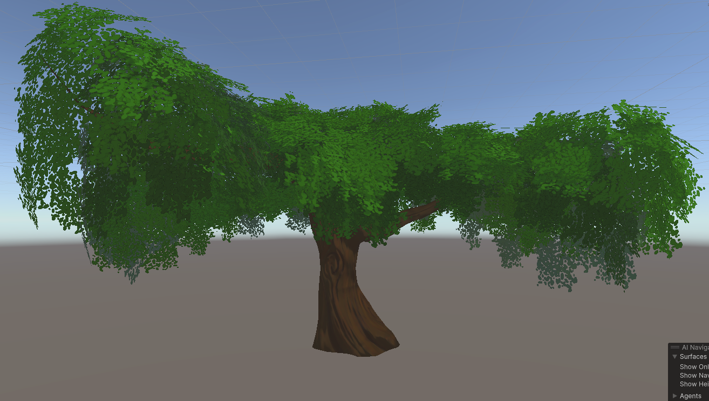
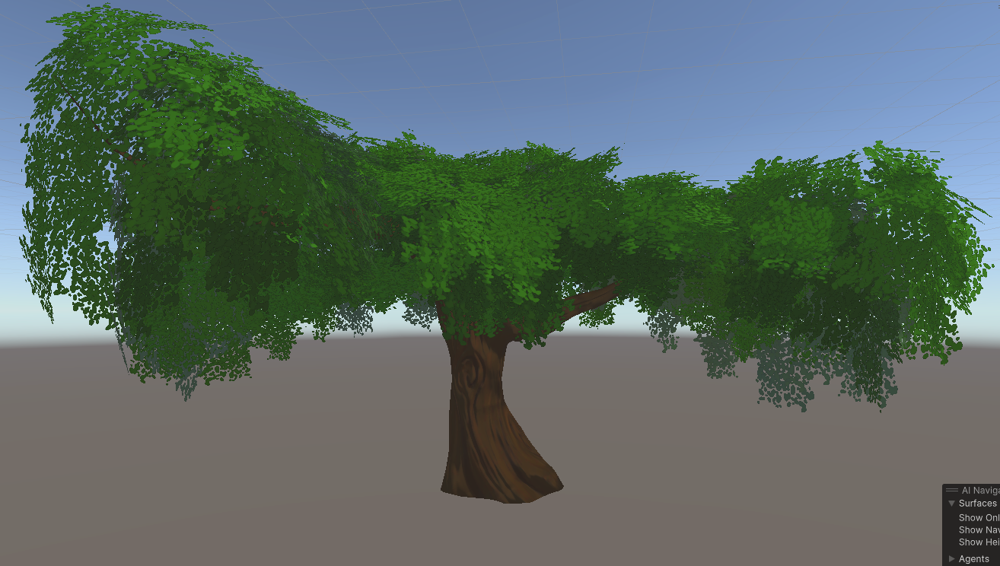

A fishtank world, designed around harsh weather which is randomly simulated. The world is made for its inhabitants which hide from bad weather.
The idea forms from the contempt of a microbiome, telling a story of a smaller civilization in a dystopian world. The harsh weather was achieved through particle systems, lighting changes and sounds. And the inhabitants' interaction is built using a behaviour tree, with the world being built on stylized assets.


 
